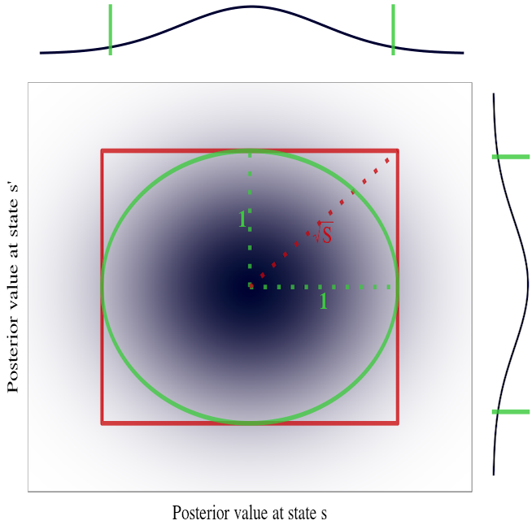

Publications
All the links you could want
PhD Thesis: Deep Exploration via Randomized Value Functions

Statistically efficient RL requires "deep exploration".
Previous approaches to deep exploration have not been computationally tractable beyond small scale problems.
This dissertation presents an alternative approach through the use of randomized value functions.
Ian Osband
PhD Thesis 2016
[Stanford link] [Mirror] [YouTube]
Posterior Sampling for Reinforcement Learning without Episodes
Some of the previously published results for posterior sampling without episodic reset are incorrect.
This note clarifies some of the issues in this space and presents some conjectures towards future solutions.
Ian Osband, Benjamin Van Roy
arXiv technical pre-print 2016
[Paper]
On Lower Bounds for Regret in Reinforcement Learning
A previously published proof for the lower bounds on what is possible for any reinforcement learning algorithm are incorrect.
posterior sampling without episodic reset is incorrect.
This note clarifies some of the issues in this space and presents some further conjectures on what might be true in this space.
Ian Osband, Benjamin Van Roy
arXiv technical pre-print 2016
[Paper]
Why is Posterior Sampling Better than Optimism for Reinforcement Learning?

Computational results demonstrate that PSRL dramatically outperforms UCRL2. We provide insight into the extent of this performance boost and the phenomenon that drives it.
Ian Osband, Benjamin Van Roy
EWRL 2016 (full oral)
[Paper] [Code]
Deep Exploration via Bootstrapped DQN
Deep exploration and deep reinforcement learning. Takes the insight from efficient exploration via randomized value functions and attains state of the art results on Atari. Includes some sweet vids.
Ian Osband, Charles Blundell, Alex Pritzel, Benjamin Van Roy
NIPS 2016
[Paper] [Videos]
Bootstrapped Thompson Sampling and Deep Exploration
 A principled approach to efficient exploration with generalization that can be implemented for deep learning models at scale. Use an augmented bootstrap to approximate the posterior distribution.
A principled approach to efficient exploration with generalization that can be implemented for deep learning models at scale. Use an augmented bootstrap to approximate the posterior distribution.
Ian Osband, Benjamin Van Roy
arXiv technical pre-print 2015
[Paper]
Generalization and Exploration via Randomized Value functions
 You can combine efficient exploration and generalization, all without a model-based planning step. Some cool empirical results and also some theory. My favorite paper.
You can combine efficient exploration and generalization, all without a model-based planning step. Some cool empirical results and also some theory. My favorite paper.
Ian Osband, Zheng Wen, Benjamin Van Roy
ICML 2016
[Paper] [Talk] [Poster] [Slides]
Model-based Reinforcement Learning and the Eluder Dimension
 The first general analysis of model based RL in terms of the dimensionality, rather than the cardinality, of the system. Several new state of the art results including linear systems.
The first general analysis of model based RL in terms of the dimensionality, rather than the cardinality, of the system. Several new state of the art results including linear systems.
Ian Osband, Benjamin Van Roy
NIPS 2014
[Paper] [Poster]
Near-optimal Reinforcement Learning in Factored MDPs
 If the environment is a structured graph (aka factored MDP), then you can exploit that to learn quickly. You can adapt UCB-style approaches for this, posterior sampling gets it for free.
If the environment is a structured graph (aka factored MDP), then you can exploit that to learn quickly. You can adapt UCB-style approaches for this, posterior sampling gets it for free.
Ian Osband, Benjamin Van Roy
NIPS 2014 (spotlight), INFORMS 2014
[Paper] [Poster] [Spotlight]
(More) Efficient Reinforcement Learning via Posterior Sampling
 Efficient Reinforcement Learning via Posterior Sampling") You don't need to use loose UCB-style algorithms to get regret bounds for reinforcement learning. Posterior sampling is more efficient in terms of computation and data and shares similar gaurantees.
You don't need to use loose UCB-style algorithms to get regret bounds for reinforcement learning. Posterior sampling is more efficient in terms of computation and data and shares similar gaurantees.
Ian Osband, Dan Russo, Benjamin Van Roy
NIPS 2013, RLDM 2013
[Paper] [Poster]
Deep Learning for Time Series Modeling
We apply deep learning techniques to energy load forecasting across 20 geographic regions.
We found that recurrent network architectures were particularly suited to this task.
Class project for CS 229 in my first quarter at Stanford.
Ian Osband, Enso Busseti, Scott Wong
Class project 2012
[Paper]